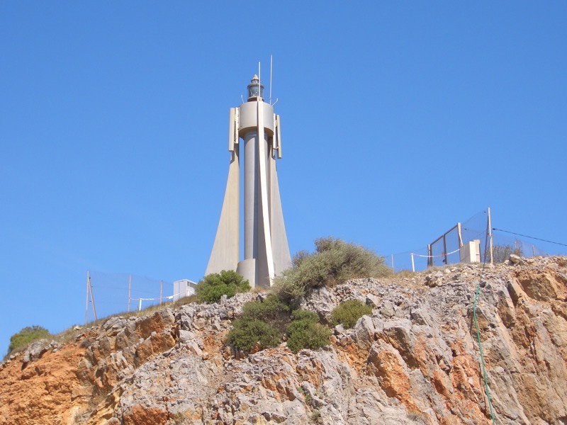
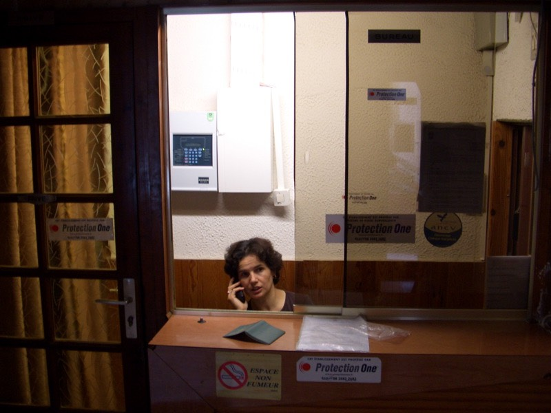

明天去看看海吧，睡前這麼期待著，看看海應該會舒坦些。
早上起來天氣又回到萬里無雲的狀態，跟前幾天的陰霾已經連接不上。
氣溫將近30度左右吧，騎車會滴汗的程度，為了怕新的貨架再度斷裂，
所以行李適度減重，可是根本沒有能丟棄的東西，所以本來新加的一瓶1.5L備用水，又停止供應了。
舊的600 CC水壺也不知道又丟到什麼地方去了，換一個新的瓶子，只有500 CC，更要省著喝。
早餐就吃焦糖巧克力，超甜的食物，應該能撐上好一段時間。
既然打算去看海，就不直接像東北方的B城騎，轉往南向納荷波恩附屬的海灘走。
說是附屬的海灘，也騎了將近20公里才到，一點都不近呀∼
十點多才開始騎，城市的夜晚跟天明差異真的挺大的。
半路看到關於納荷波恩的裝飾，羅馬的柱子不知道跑來這裡做什麼？
道路的分歧點，走D31的話，只要9公里就能到B城附近。
走D168往海邊，要11公里才會到，而且跟B城完全是反方向。
猶豫了一下.......還是決定去看海。
翻過一個山頭，海出現了，達成小小心願，不禁開心了起來，心情好了許多。
這邊的房子好像用積木疊的一樣，顏色都很俏皮。
大家都穿著泳裝在海邊休憩，晒太陽的，放風箏的，打排球的，玩風帆的，應有盡有。
那我穿這麼多幹嘛呢？入境隨俗，脫掉了一直很想脫的上衣打赤膊，這樣晒的比較均勻。
小小的迷你燈塔，晚上不知道會有多亮？

騎到這邊已經中午了，吃點東西吧，點一份KEBAB，4.8歐元。
每次都是左手上鏡頭，這次換老闆的手。
看到海很高興，那就想辦法接回原路繼續騎吧，繞來繞去，就迷路了 =.="
風勢是從左往右吹，挺大的風，如果是順風的話，車子不用騎自己也會跑的程度。
相當的糗，完全不知道自己在什麼地方，看到一條河，就沿著河直直走，結果走到河的出海口。
就是盡頭了，沒有橋可以跨過河道對面去，好多人在河岸釣魚，看似清涼的河水，好想跳下去泡泡。
真是豬頭呀，走錯路了，而且不是亂繞別條路就可以接回去的那種，而是要回頭走原路。
結果風勢不變，可是掉頭騎之後卻成了逆風，奮力一步一步的前進。
即使目的地已經決定，但要前往目的地的路線，依照個人喜好可以有相當大的變化性。
今天就儘可能的沿著海邊走，看盡沙灘上空美女，眼睛吃了許多冰淇淋，打了好幾個大噴嚏。
500 CC的水是撐不了多久的，在騎車時眼睛會自動對某些物品特別敏感，水龍頭就是其中之一。
不能輕易錯過任何補充水分的機會，灌了整肚子的水，再裝一瓶沿路喝。
東繞西繞，走D618->D14->N9到B城時，已經騎了超過60公里了。
其實也不是非得特地到B城來不可，只是不到這裡來的話，真的搞不清楚自己在地圖上的什麼地方。
到B城時，買了一罐飲料，想說每次都喝可樂芬達有點膩，喝點別種口味的，2.3歐元。
看起來應該不錯喝，結果味道跟廣告顏料加水稀釋再加糖沒兩樣，還是喝老牌子的有保障。
從B城到蒙貝利耶有數種走法，可區分為陸路或是海路，還是想看海，所以就選SETE方向的N112走。
路上又是運河，在飛機、公路、鐵路這麼發達的時候，運河已經漸漸只剩下觀光的價值了。
看地圖，這沿路都是海灘，而且形狀的不像是天然的，實際到了之後，真的是一條長約20公里的筆直海灘。
沿路停滿了車輛，海灘上全都是人，上空泳裝也首度出現。
不用那麼辛苦拿放大鏡找上空泳裝，這邊先送上兩個，有本事就把她們翻過身來吧。
騎在路上，眼睛不停的往海灘瞄，車子也跟著往右偏，差點就撞到沿路停放的車輛。
沿路都看到很多人埋在沙子裡面，突然看到很搞笑的畫面，兩個美女把一隻小狗埋在沙灘裡面。
因為只埋了四隻腳，所以小狗想掙脫的話應該不困難，但還是乖乖的任美女擺佈。
雖然有上空泳裝，但比例不高，大約10個才有2個是上空的，2個裡面又有1個正趴著做日光浴。
筆直公路旁的筆直海岸底端有一個葫蘆型的小山，那就是SETE。
法國的河大多是綠色的，海則正常，一樣是藍的。
騎到SETE後往回看，遠方那一條的海岸線就是剛才經過的沙灘。
路道是挺小條的，給人走的觀海步道都比給車走的馬路寬了好幾倍，理所當然就這麼塞住了。
腳踏車不怕塞，移上來走人行道便OK！
SETE有好多的海鳥∼但是都很安靜的在飛，或是停在海上隨著波浪載浮載沈。
這邊的漁船也很多，看到了捕魚用的籠子。
有大船進出時可以升起的橋，到處都是釣魚的人，橋下有個阿伯也在努力。
大概是為了減輕橋的重量，所以橋面是中空的，可以往下看到海。
快要離開SETE時，看到船錨的裝飾品。
從SETE往蒙貝利耶，約26公里，保持昨天的高效率，1小時就騎到了。
除了水龍頭之外，眼睛對『HOTEL』的招牌也格外的敏感，騎在大馬路上穿梭，尋找旅館的蹤影。
彷彿看到巷子裡出現一個HOTEL的牌子，馬上回頭確認有沒有看錯，果然是旅館，房價也很便宜，才23歐。
取過鑰匙時，她才跟我提醒到，現在旅館沒有水可以使用，因為附近在施工的關係。
他們有去反應過了，施工單位是說可能今天晚上可能恢復供水。
『可能？』我重複的質問到。
『是呀，他們也不能保證有沒有水可以用，所以洗澡方面會有一點麻煩。』
嘖....第一次住到沒水可用的旅館，等到現在晚上十點多了，還是半滴水都沒有。
店員有一點像周星馳電影裡的角色。

房間很便宜，地段也很不錯，騎車出去晃晃，走還沒50公尺就發現可用的網路。
晚餐到雜貨店解決

不知道吃什麼好，就隨便買了一包洋芋片（1.45歐元），一瓶兩公升的柳橙汁（1.95歐元）
一個起司漢堡（2歐元），兩粒蘋果（1.02歐元），也算是還可以的一餐，只是少了大魚大肉。
沒水可用有點傷腦筋，天氣也越來越悶熱了，居然渴望有冷氣可以吹？
快點恢復供水吧∼∼不然我就要發酸了 @@"
諸位男性同胞，蔚藍海岸到了！